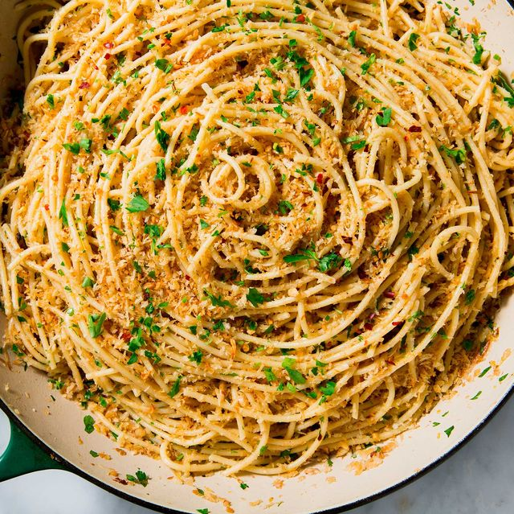

Spaghetti

There's
nothing
like classic spaghetti and meat sauce to
bring people together around the dinner table. This homemade spaghetti
sauce with ground beef recipe will satisfy all your comfort food cravings.
Ingridients
- 1 pound spaghetti
- 1 pound lean ground beef
- 1 onion, chopped
- 2 cloves garlic, minced
- 1 (28 ounce) can crushed tomatoes
- 1 (6 ounce) can tomato paste
- 1 (6 ounce) can tomato sauce
- 3 tablespoons white sugar
- 1 tablespoon dried oregano
- 1 tablespoon dried basil
- 1 teaspoon salt
- 1 teaspoon ground black pepper
- 1 teaspoon fennel seeds
- 1 teaspoon garlic powder
- 1 teaspoon onion powder
- 1/2 teaspoon ground cayenne pepper
Directions
- Bring a large pot of lightly salted water to a boil. Cook spaghetti in the boiling water, stirring occasionally until cooked through but firm to the bite, about 12 minutes. Drain.
- Heat olive oil in a large skillet over medium heat. Cook and stir ground beef, onion, and garlic in the hot oil until beef is crumbly, evenly browned, and no longer pink, 5 to 7 minutes. Drain and discard grease.
- Stir crushed tomatoes, tomato paste, tomato sauce, sugar, oregano, basil, salt, pepper, fennel seeds, garlic powder, onion powder, and cayenne pepper into the beef mixture. Bring to a boil. Reduce heat to medium-low, and simmer sauce, stirring occasionally, until flavors are blended, about 30 minutes.
- Toss cooked spaghetti with sauce, and serve.